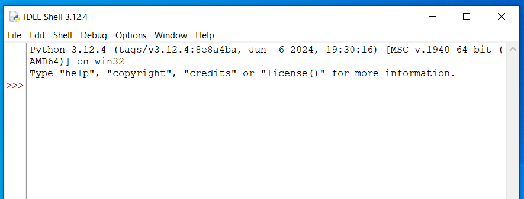
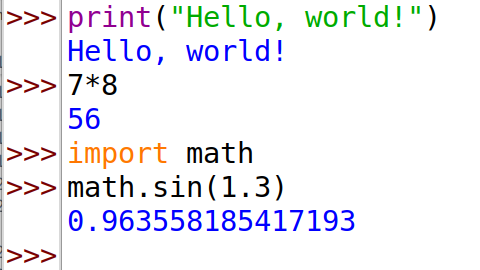
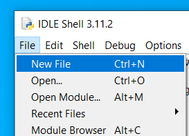
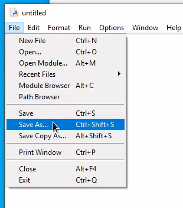
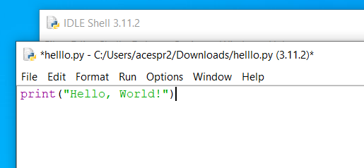
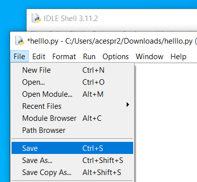
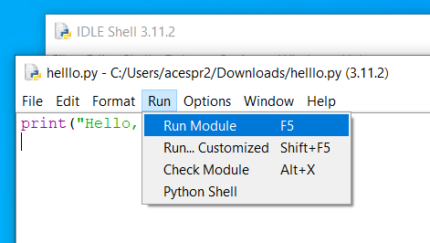
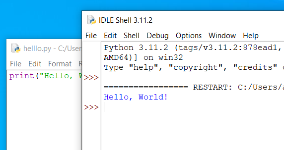

In these notes, we will run Python through a program called IDLE. (If you prefer a different Python editor, that is fine.)
When you load IDLE, it opens in the IDLE Shell, which is an interactive prompt. You can type commands here and get immediate output.
Load IDLE Shell
Open IDLE. The easiest way is to click the Start menu and search for 'IDLE'.
When this shows you a IDLE Shell, check that what loads says "Python 3.something" at the top and not "Python 2.something". If it says "Python 2.something" on opening, then something has gone wrong (ask for help).

Run some code
Type of copy this command and press enter. You should find Python outputs "Hello, world!".
print("Hello, world!")
Try some simple calculator operations. For example, multiple two numbers using *.
7*8
Let's try some more advanced mathematics. First we must import additional maths functionality.
import math
Now we can ask for using
math.sin(1.3)
If you got the output "Hello, world!", "56" and "0.963558185417193", then congratulations - you have Python running.

Writing programs with Python
Python isn't an editor you use to write your program. Python is what runs your code once you've written it. Your program is stored as a simple text file, which you give the file extension .py like my_first_program.py.
Here we are using IDLE as the editor.
Open IDLE. The easiest way is to click the Start menu and search for 'idle'.
When this opens, it shows you the IDLE Shell. This is where we typed commands last week, and it's where your programs will run. Check that what loads says "Python 3.something" at the top and not "Python 2.something". If it says "Python 2.something" on opening, then something has gone wrong.
Go File > New File (or press Ctrl+N) to start a new program file.

Save your new file somewhere using File > Save As (or Ctrl+S). Choose somewhere sensible to keep your files for this module. For example, you might have a "year 3" folder and create within this a folder called "sustainability". Within this, you might create a folder for each week, so put today's code in year 3\sustainability\week 2 for example.

Write some code. For example, the one line program below is a traditional first program.
print("Hello, World!")

Save the new code, either via File > Save or press Ctrl+S.

Choose Run > Run Module or press F5. This asks Python to process your code and displays the output in the IDLE Shell window.

It runs! (I hope!) Hooray!

Next time, if you are starting a new program, just follow these instructions. If you are writing a longer program, you can continue to work on a file: in step 3 choose File > Open... rather than New File.
Variables
Python variables have names, which do not need to be a single letter. In fact, they are often better as more than a single letter because then you can give them a name that describes what they are. For example, a variable NumberOfElephants is clearer what it is counting than a variable n. This makes your code easier to read, and also helps when you reopen this code months or years later and can't remember what anything means!
There are some rules in Python about variable names.
these can use any letter, the character _, and any number provided you do not start with it.
variable names cannot contain spaces or signs with special meanings in Python such as + and -.
you also cannot use a name that already has a special meaning in Python.
If you want to use multiple words in your variable name, you cannot use a space. Two ways to deal with this are either squash the words together - use a capital at the start of each word to make it clearer to read - or use an underscore _ where you would use a space. So either MySuperheroName or my_superhero_name.
For example, the following are some acceptable variable names:
x
giraffe123
norfolk_building
Defining variables
You don't need to tell Python what type of information you want to store in each variable (whether it will be a number or text, for example). So to define a string or integer or decimal, simply use =.
For example, the following will work in Python:
x = 3
hello = "banana"
apple = 3.14159
Displaying variables
If you want to know what value a variable holds you need to ask the program to output it using print.
For example if you run the following program, it should output "It was a bright cold day in April, and the clocks were striking thirteen.":
george="It was a bright cold day in April, and the clocks were striking thirteen."
print(george)
If statements
We can use a command called if to test conditions that evaluate to either True or False. We can use this to decide whether to run a block of code or not.
The basic syntax of an if statement in Python follows. Here we define a variable A and set it equal to 1, then we test whether A is equal to 1 and, if it is, we print a message saying so.
A=1
if A == 1:
print("A is equal to one")
elif A == 7:
print("A is equal to seven")
else:
print("A is not equal to one or seven")
We can combine tests using and and or, and we can use not.
Strings (text)
A string is a bit of text. Note the difference between elephant and "elephant". The first is a variable, and the second is a string. Do you see how the string is surrounded by quote marks?
You can use either double quote marks "..." (which I prefer) or single quote marks '...' for a string. Python treats these interchangeably (though this is not true of all programming languages).
Here we define a string and then print it out.
herbert = "No one would have believed in the last years of the nineteenth century that this world was being watched keenly and closely by intelligences greater than man's and yet as mortal as his own"
print(herbert)
Here we print a string that isn't defined as a variable first.
print("Being wrong isn't a bad thing like they teach you in school. It is an opportunity to learn something.")
Things get interesting when we want to build strings dynamically. For example, to concatenate two strings together or to insert a variable into a string.
You can put together strings involving variables like this. Note the f before the first quote mark and the {...} around the variable name.
theanswer = 42
print(f"The Answer to the Great Question of Life, the Universe and Everything is {theanswer}.")
The f tells Python we want the string to be formatted to include the values of the variables names, and the {theanswer} tells Python to put the value of theanswer at that point (the { and } will not appear).
Lists
Lists hold a list of values. For example, here subjects is a list of strings:
It is important to remember that a lot of counting in computing starts at 0. Failure to remember this can lead to a program doing something one place different from where you expected, a so-called 'off by one error'.
You can also access the values starting from the end by using negative numbers. For example, the following will print the last and third from last elements of the list.
You can also access a range of values by slicing from the list. The following example uses code comments to indicate what is happening. Note the notation a[start:end] slices the values from the list from start to end-1 (i.e. the value in the end position is not returned). Leaving either start or end blank tells Python to use the start or end of the list.
a = [1,2,3,4,5,6,7,8,9,10,11,12,13,14,15]
print(a[0:2]) # first and second
print(a[1:4]) # second to fourth
print(a[-3:]) # last three
print(a[2:]) # everything from the third onwards
print(a[:7]) # everything from the start until the seventh
You can add values to the end of a list using append().
You can sort a list by its values (rather than creating a copy) using sort, as in the following example. The disadvantage of this is that it modifies the existing list, losing whatever order it was in.
original_order = ["England", "Scotland", "Wales", "Northern Ireland"]
original_order.sort()
print(original_order) # original ordering is lost and cannot be recovered
You can find the number of entries in a list using the len function.
The basic principle with a for loop is to run a series of commands a fixed number of times, by incrementing a counter or iterating over an array or list. A for loop can therefore be used to produce a particular action a set number of times.
Here the for loop defines a variable c and uses this as a counter across a range from 0 to 10.
for c in range(0,10):
print(c)
Did you notice that 10 isn't included? When we specify range(a,b) it goes from a up to but not including b. Can you edit the code so 10 is included?
Instead of using a loop counter, you can also ask a for loop to loop over the entries in a list. Here is an example where a variable name is used to iterate over a list of strings.
characters = ["The Cat", "The Fish", "Thing 1", "Thing 2", "Sally", "Sally's brother"]
for name in characters:
print(name)
If it is important to know where you are in the list, you can use a loop counter to loop over a list, for example:
characters = ["The Cat", "The Fish", "Thing 1", "Thing 2", "Sally", "Sally's brother"]
for i in range(0,len(characters)):
print(f"character {i} is {characters[i]}")
A particularly useful operation with for loops is to have one nested inside another. The following code illustrates this. The outer loop runs through the counter i, but for every iteration of i, the inner loop iterates through all values of j. Run and and see the result.
for i in range(0,10):
for j in range(0,10):
print(f"This is i={i} and j={j}")
while
A while loop is a different kind of loop. Previously we saw for loops, which run a series of commands a set number of times. A while loop runs a series of commands until a certain condition is met.
An example of a simple while loop is given below. This uses a variable i and keeps going until .
i = 1
while i**2 < 100:
print(f"{i} squared is {i**2}")
i += 1
Notice that we have to manually increment a counter using i += 1 because the loop doesn't do this for us (unlike a for loop).
Notice that we did not need to know that the loop was going to stop at i=9 in advance - the while condition worked this out for us as we went.
Functions
Put simply, a function is a collection of commands that you might want to reuse. It can take input and produce output (though it doesn't have to do either).
You've already used some built-in functions. For example, print is a function that takes as input a string and outputs this string followed by a new line character \n to the Python shell. It does not return anything, meaning that you don't store a return variable by writing something like a = print("Hello").
You can send `print` a second parameter `end=""` to tell it what to put at the end of the string instead of a new line character. (To see full details, go to the Python shell and enter `help(print)`.) For example, you can change the character that Python puts at the end of the string by writing something like `print("Hello", end=",")` to put "`,`" at the end of what you print. However, `end` defaults to `\n`, so if you don't specify it then `\n` is what is used.
It is sometimes useful to define your own function. This gives you a command you can run from elsewhere in your program, perhaps multiple times.
Here is a simple definition of a function. It takes an integer and prints it out. You can place this anywhere in your script before the first time you want to call the function. Note that the code inside the function definition is indented (like we saw with if and for).
def printme(i):
print("You asked me to print out this: {}".format(i))
On its own, the function doesn't do anything. All the code above does is defines the function, it doesn't tell it to run. You get the function to act by calling it using the name you gave it (in this case, printme). The good thing about having code in a function is that you can call it multiple times in your script, as in the code below.
def printme(i):
print("You asked me to print out this: {}".format(i))
printme(7)
printme("hello")
printme(5*9)
The function we wrote, printme takes a variable as input and doesn't return anything. The action it takes is to print out something with some extra text.
Below is a function that takes an input and has a return value - it returns double what you give it as input using the command return. Here, we call the function we wrote, doubleme, three times, and collect the return values into variables a, b and c. Then we print the values of a, b and c as a tuple.
def doubleme(number):
return 2*number
a = doubleme(2)
b = doubleme(57)
c = doubleme(-5)
print((a,b,c))